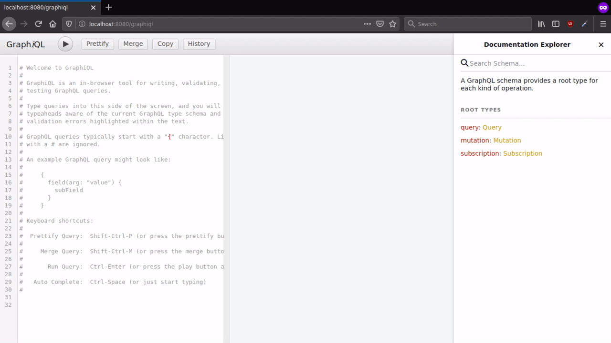
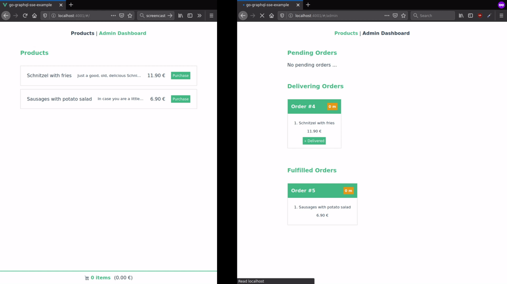

In the previous part, concepts and benefits of GraphQL and GraphQL Subscriptions were presented and proposed as a modern, highly flexible alternative for designing web APIs.
In this post, we are going to look at actual code. For demonstration purposes, a small single-page application (SPA) is built as an example. It can serve as a cleanly structured starting point for new apps based on the proposed tech stack.
> Code: muety/go-graphql-sse-example
What to build?
The demo web app built in the context of this article comprised of a client-side frontend, built with VueJS and a server-side component built with Go. The two components interact with each other through a GraphQL API, which additionally offers the option to subscribe to data updates using Server-Sent Events.
With this demo app, we aim to mimic the functionality of a very basic, minimalist food ordering system. Customers can choose from a list of food products and place their orders. They are shown a waiting number an estimated processing time for their orders and are notified once the order is ready to be picked up. One the other side there is the kiosk operator, who views a live dashboard of currently pending orders, which appear just as they are being placed.

Technology Stack
In summary, the following technologies are used:
- Go as the primary backend-side language
- GraphQL as a “protocol” for defining web interfaces
- Server-Sent Events as a simple protocol for live updates, used as an implementation of GraphQL Subscriptions here
- MongoDB as a flexible document database for storage
- VueJS as a frontend framework to build single-page web applications
In addition, graphql-request is used as a little helper library on the frontend to issue GraphQL queries more easily. It constitutes a light-weight wrapper around the plain Fetch API.
On the backend side, GraphQL development is facilitated by the excellent graphql-go package, which already provides well-defined guidelines to get started (thanks to the authors!).
Data Model
With GraphQL, you need to specify a schema using a GrapQL-specific syntax. It includes all entities, which your API should be able to deal with and is essentially a set of type definitions, split among one or more .graphql files.
Every GraphQL app consists of root types, defining all supported queries, mutations, and subscriptions as well as entity types.
For our app, the root schema looks like this (schema/schema.graphql):
1 | schema { |
The type definition for the Product type referenced in the root schema is given as (schema/type/product.graphql):
1 | type Product { |
The entire schema can be found in the GitHub repository.
After having defined your schema, in the case of graphql-go, it gets transformed into Go code, so it can be compiled into the final Go executable. It can then be loaded on application startup (see server.go) and served via an HTTP endpoint. Pretty straightforward!
1 | graphqlSchema := graphql.MustParseSchema(schema.GetRootSchema(), &resolver.Resolver{}) |
Resolvers
After having defined and loaded the schema, so-called resolvers need to be defined. The concept of resolvers is common among most GraphQL server libraries for various different programming languages. A resolver is responsible for providing the data for every field of an entity, e.g. for the ID, name, description, and price fields. Such fields can be literals, as it is the case with all fields of the Product type, but also other nested entities, like in the products field of the following Order type:
1 | type Order { |
For literals, the resolver simply fills in the actual string, number, or boolean. For complex types, it delegates their resolution to their respective resolvers recursively. For instance, to resolve products, the orderResolver will ask a productResolver to do its respective duty.
When working with go-graphql, a simple resolver looks like this (resolvers/product.go):
1 | type productResolver struct { |
Very simple. It is instantiated with a reference to a Product struct, which was previously loaded from the database and simply maps attributes of the raw data model to the respective GraphQL fields. Please note that it doesn’t have to be that trivial. For instance, your MongoDB schema might define firstName and lastName fields, while your GraphQL type only has name. In that case, the resolver would have to do some basic concatenation.
Things get a little more complex when dealing with non-literal fields, like the Order's products above. In our database schema, an order only holds a list of product IDs as items. However, the GraphQL schema declares to return actual product objects. To do so, the respective resolver method first fetches the products for every ID from the database and then passes it on to productResolvers (see resolvers/order.go):
1 | ... |
Resolvers are very modular, coherent in themselves and can be composed together to build up an entire API. Note that even the very entrypoint of the GraphQL API is just a “root” resolver. You can find all resolvers, including those for mutations and subscriptions as well, in the repo.
Subscriptions
Probably the most interesting part here is subscriptions, as they provide a nice mechanism to make web applications reactive to backend-side data updates. As mentioned in the previous article, the GraphQL specification does not dictate how to technically implement subscriptions. Therefore, we decided to use Server-Sent Events (SSE) as a server-to-client communication channel. Technically, SSEs are simply a long-running HTTP request, which data is written to in form of a text stream and therefore very light-weight and easy to use.
On the backend side, we introduce a light-weight event bus to our services. For every data change, i.e. updates, creations or deletions, an event is published to the bus (see services/order.go):
1 | func (s *OrderService) Create(order *model.Order) (*model.Order, error) { |
Inside the resolver responsible for orderCreated queries, a subscription to the event bus is made once the user requests that subscription.
1 | func (r *Resolver) OrderCreated(ctx context.Context) (chan *orderResolver, error) { |
When a new order is inserted via the respective service, the above method is triggered as a consequence of being subscribed to order.create events. It reads the orer’s ID from the event, uses the qualified service to fetch it from the database and passes it on to an orderResolver to translate it into the schema-conformal format.
The HTTP handler, which dispatched the user’s GraphQL query to the above resolver, in turn, has subscribed to the result Go channel and writes every incoming Order instance to always-open HTTP stream (see middleware/graphql.go):
1 | ... |
Running Queries
Using GraphiQL
During development, queries against a GraphQL API can be issued using the interactive GraphiQL browser, as demonstrated here.

Programatically
On the client-side of our application, GraphQL queries are run to consume the API. After all, any client, that is able to speak HTTP, can also consume a GraphQL API, as GraphQL requests are really just POST requests with a certain query in the body.
For instance, the Vuex store action responsible for loading a list of products in the frontend is this (see store/products.js):
1 | async fetchProducts({commit}) { |
For subscriptions, we rely on a slightly modified version of sse.js. It acts as a minimal wrapper around the browser’s standard EventSource and allows us to run SSE requests as POST (instead of GET) queries and pass some data in the body. We do so to fit well with GraphQL, where queries are always POST requests with a respective query body.
Subscribing to new orders in the frontend is mostly done like this:
1 | async subscribeOrderCreated({commit}) { |
Demo
And here’s a live demo in action!

Outlook
While the current demo implementation serves as a – in our opinion – clean and well-structured starting point for building GraphQL-based web apps, its current state has one major drawback. It lacks authentication and authorization. Usually, you want to control which user can query and modify which data. Therefore, another blog post will follow in the future, which explains how to authorize GraphQL query endpoints.
Apart from that, we consider the present technology stack a promising choice for new web applications with the potential to facilitate clean, well-organized code and to make development easier, and more flexible.